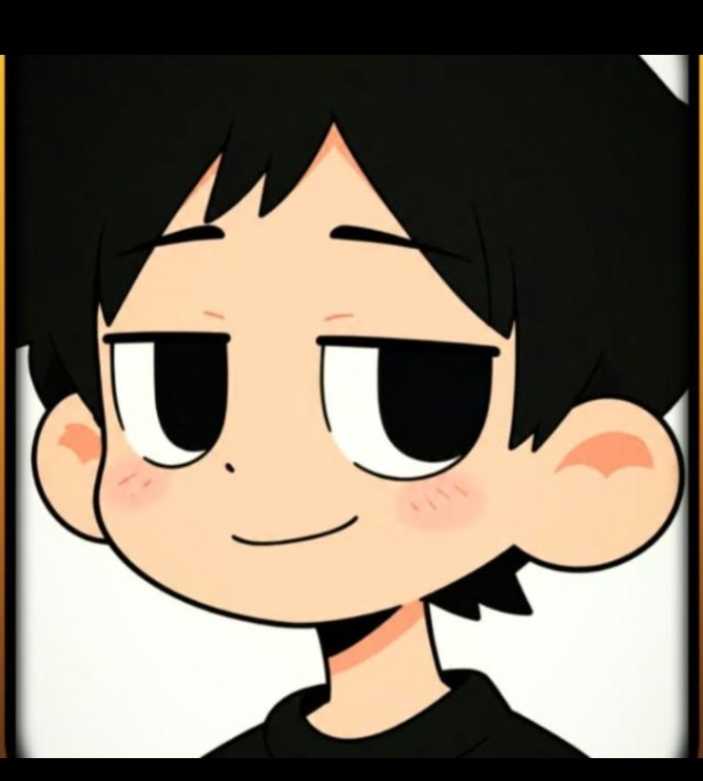
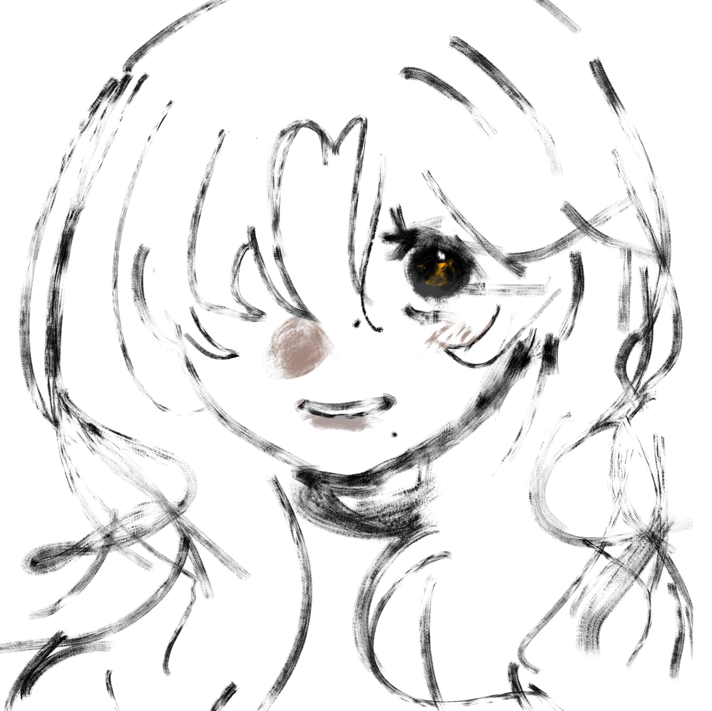
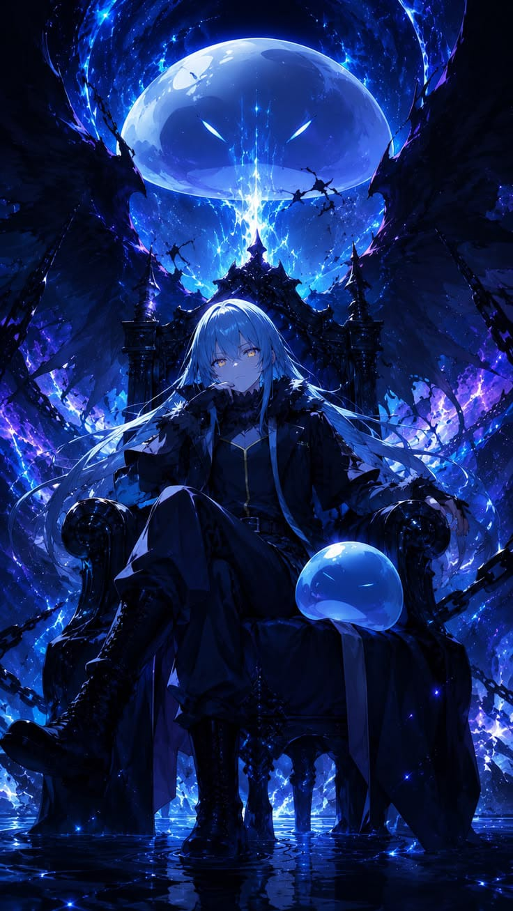
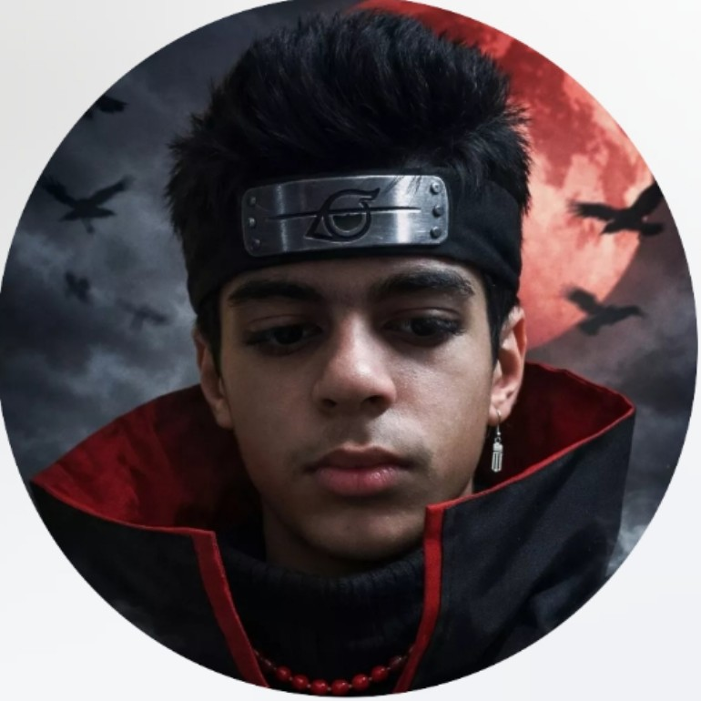
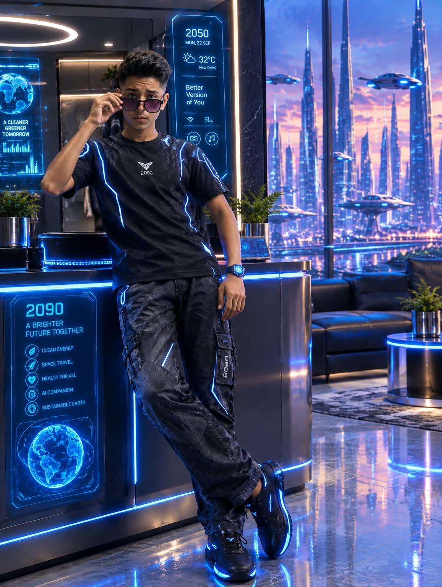

ABOUT OUR TEAM

PUSHKAR
ANIMATOR

N SUHAS
ANIMATOR

ISITHA
ANIMATOR

AMAN
WEB DESIGNER

TAJES
VOICE ARTIST
JAZZ
ANIMATOR

RAGHAV
EDITOR
STABLE EXPECTATION
| Home Page | About us | Current Projects |
|---|
| WELCOME TO STABLE EXPECTATION |
| WHERE YOUR IMAGINATION COMES TO LIFE WITH THE MAGIC OF 2D ANIMATION |

ANIMATOR
ANIMATOR

ANIMATOR

WEB DESIGNER

VOICE ARTIST
ANIMATOR

EDITOR
Storyboard Cut Breakdown
• CUT 01 — Establishing Wide: Dark bedroom at night. Moonlight enters through the window. Haze lies still on his bed. [SFX: Soft wind]
• CUT 02 — Medium Shot: Haze lying on his back, staring at the ceiling.
• CUT 03 — Close-Up (Eyes): His eyes slowly close.
• CUT 04 — MATCH CUT / MEMORY: Warm lighting replaces the cold bedroom.
• CUT 05 — Warm Medium Shot: Mother tucking young Haze into bed, smiling.
• CUT 06 — Close-Up (Mother): She smiles warmly.
• CUT 07 — Cooking Shot: Mother cooking while softly humming. Could use a gentle camera pan.
• CUT 08 — Hands Close-Up: Mother holding Haze's hand as thunder shakes the windows.
• CUT 09 — Medium Shot: Haze resting his head against his mother's shoulder.
• CUT 10 — Close-Up: Haze listening to her heartbeat.
• CUT 11 — Memory Transition: The warm memory gradually becomes quieter/darker.
• CUT 12 — Medium Close-Up: Mother facing Haze for the last time. Her eyes contain tears, but she smiles.
• CUT 13 — Extreme Close-Up (Mother's Hand): She brushes Haze's hair away from his face.
MOTHER: "Even when you feel alone, Haze... I'll always be with you."
• CUT 14 — Close-Up (Haze): A faint smile.
• CUT 15 — Extreme Close-Up (Hands): Mother's hand slowly slips away from Haze's.
• CUT 16 — Wide: The warm room suddenly feels enormous and empty.
• CUT 17 — Close-Up (Haze): His smile disappears.
• CUT 18 — Chest Close-Up: Haze presses his hand against his chest.
HAZE (V.O.): "I still remember those days..."
• CUT 19 — MEMORY MONTAGE: Quick flashes of his mother.
• CUT 20 — Close-Up (Haze's Eye): A tear forms.
• CUT 21 — Extreme Close-Up: Tear rolls down his cheek.
• CUT 22 — BACK TO BEDROOM / CLOSE-UP: Haze's eyes suddenly open. [SFX: WHOOSH!]
• CUT 23 — Wide: A powerful gust sweeps through the room. Curtains violently move.
• CUT 24 — Window Close-Up: The window begins shaking.
• CUT 25 — EXTREME CLOSE-UP: Glass cracks.
• CUT 26 — IMPACT SHOT: CRACK! Window shatters.
• CUT 27 — Medium: Haze sits upright in shock.
HAZE: "What...?"
• CUT 28 — POV (WINDOW): Something floats through the broken window.
• CUT 29 — Reveal Shot: The CRYSTAL slowly enters the room. Tiny particles surround it.
• CUT 30 — Close-Up (Crystal): Its glow pulses.
• CUT 31 — Close-Up (Haze): Crystal light reflects across his face.
• CUT 32 — INSERT / MEMORY PARALLEL: The crystal's warm glow resembles his mother's lantern.
• CUT 33 — Medium: Crystal slowly moves toward Haze.
• CUT 34 — Medium / Slight Low Angle: Haze moves backward across the bed.
HAZE: "Stay away from me..."
• CUT 35 — Close-Up (Haze's Hand): His hand slowly reaches toward the crystal.
• CUT 36 — Close-Up (Haze): He realizes what he's doing and pulls back.
HAZE: "No... You're not her."
• CUT 37 — Wide: Crystal continues approaching. Haze reaches the edge of the bed.
• CUT 38 — POV (CRYSTAL): Crystal floating directly toward him.
• CUT 39 — Extreme Close-Up (Haze's Eyes): Fear + curiosity.
• CUT 40 — Dead-Silent Wide: Crystal stops directly in front of Haze.
• CUT 41 — Extreme Close-Up (Crystal Core): Its center glows.
• CUT 42 — Close-Up (Haze): He stares into it.
• CUT 43 — AUDIO FLASH / CLOSE-UP: Mother's voice echoes.
MOTHER (V.O.): "Even when you feel alone..."
• CUT 44 — Extreme Close-Up (Haze's Eyes): His pupils widen.
HAZE: "Mom...?"
• CUT 45 — FULL-FRAME FLASH: FLASH!
• CUT 46 — Wide: Energy explodes outward from the crystal.
• CUT 47 — Low Angle / Haze: A transparent bubble rapidly forms around him.
HAZE: "WHAT IS THIS?!"
• CUT 48 — Medium: Haze pushes against the bubble.
• CUT 49 — Close-Up (Hand): His hand presses against the transparent surface.
• CUT 50 — Close-Up (Crystal): Crystal burns brighter.
• CUT 51 — Wide: The bubble begins lifting Haze from the floor.
• CUT 52 — Medium: Haze reaches desperately toward the crystal.
HAZE: "Wait! Are you trying to show me where she is?!"
• CUT 53 — Wide: Bubble rises toward the broken window.
• CUT 54 — POV (LOOKING DOWN): Floor becomes farther away.
• CUT 55 — Close-Up (Haze): Fear.
• CUT 56 — POV (WINDOW): The night sky waits outside.
• CUT 57 — Wide: Bubble passes through the broken window.
• CUT 58 — Exterior Wide: Haze's bubble floats outside the house.
• CUT 59 — Low Angle: Bubble rises above the house.
• CUT 60 — High Angle / POV DOWN: House becomes smaller.
• CUT 61 — Close-Up (Haze): Cold wind hits his face.
• CUT 62 — Emotional Insert: For a brief moment, Haze imagines his mother's arms around him.
• CUT 63 — Close-Up: The illusion disappears.
HAZE: "Wait! Stop!"
• CUT 64 — Extreme Wide: Bubble continues climbing.
• CUT 65 — Crystal Close-Up: Crystal floats beside him.
• CUT 66 — Tracking Shot: Crystal + bubble rise together. Sparkling particles trail behind them.
• CUT 67 — Particle Close-Up: Particles drift past Haze.
• CUT 68 — Memory Insert: Tiny stars his mother used to draw on his ceiling.
• CUT 69 — Close-Up (Haze): His expression becomes emotional.
HAZE: "Mom..."
• CUT 70 — Extreme Wide: Bubble rises above the clouds.
• CUT 71 — Huge Establishing Shot: Night sky. Clouds beneath Haze. Tiny bubble floating upward.
• CUT 72 — Medium: Haze looks down.
• CUT 73 — POV DOWN: The world is almost completely swallowed by darkness.
• CUT 74 — Close-Up (Haze): He clutches his chest.
• CUT 75 — Crystal Close-Up: Its glow illuminates him.
• CUT 76 — Two-Shot: Haze and crystal floating together in the darkness.
• CUT 77 — Close-Up (Haze): His eyes become heavy.
HAZE: "What... is happening to me...?"
• CUT 78 — POV / BLUR: His vision begins fading.
• CUT 79 — Crystal POV: The crystal is the last clear thing he sees.
• CUT 80 — TRANSFORMATION SHOT: Crystal's light briefly forms the shape of his mother's smiling face.
• CUT 81 — Extreme Close-Up (Haze): Barely conscious.
HAZE: "I'll find you..."
• CUT 82 — WHITE FLASH
• CUT 83 — BLACK SCREEN [SFX: Soft mysterious ringing...]
• CUT 84 — FADE IN / EXTREME WIDE: Golden morning sky. Clouds drift peacefully below.
• CUT 85 — Close-Up (Haze's Eye): Eye slowly opens.
• CUT 86 — Medium: Haze lifts his head.
HAZE: "...Where am I?"
• CUT 87 — POV / REVEAL: Nothing beneath him.
• CUT 88 — EXTREME WIDE: Haze is FLOATING ABOVE THE CLOUDS. (Big reveal shot)
• CUT 89 — Close-Up (Haze): Pure disbelief.
• CUT 90 — Wind Close-Up: Wind moves through his hair.
• CUT 91 — Close-Up (Haze): He hears faint humming.
• CUT 92 — POV (EMPTY SKY): He turns. Nobody.
• CUT 93 — Crystal Reveal: Crystal floats beside him. Still glowing.
• CUT 94 — Two-Shot: Haze and crystal facing each other.
• CUT 95 — Close-Up (Haze's Hand): He slowly reaches toward it.
HAZE: "Do you know where she is?"
• CUT 96 — Extreme Close-Up (Crystal): No response.
• CUT 97 — Close-Up (Crystal Glow): It pulses softly.
• CUT 98 — Close-Up (Haze): His eyes fill with tears.
• CUT 99 — Medium / Hero Shot: Haze closes his fist. Looks toward the endless sky.
HAZE: "I'll find her... no matter where you take me."
• CUT 100 — Extreme Wide: Haze + crystal become tiny against the enormous sky.
• CUT 101 — CUT TO BLACK
CUT 102 — BLACK
TO BE CONTINUED.